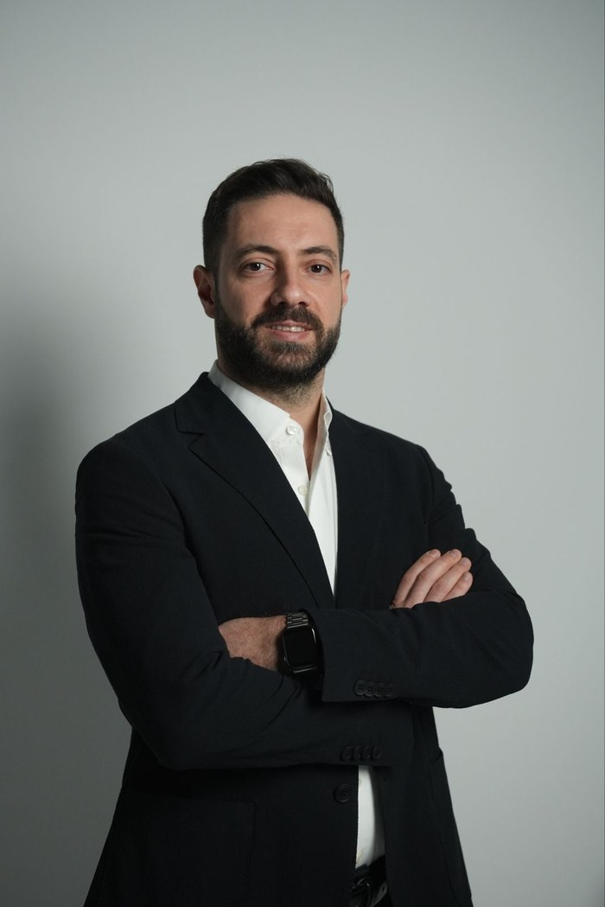

Öfkeyi anlamak ve yönetmek
Klinikten Sahaya: Değerlendirme ve Müdahale Yaklaşımları
Öfkeyi bir duygu olarak tanımak, görüşmede nasıl ele alınacağını düşünmek ve klinik ile spor ortamındaki örnekler üzerinden müdahale yaklaşımlarını konuşmak için iki saatlik canlı eğitim.
Klinik Psikolog Dr. Metin Aksu
Düzenleyen: Room Psikolojik Danışmanlık ve Eğitim
Öfkeyi tanımak ve ele almak
Öfke gündelik ilişkilerde, klinik görüşmelerde ve rekabetin yoğun olduğu spor ortamlarında farklı biçimlerde karşımıza çıkabilir. Bu eğitimde öfkenin ne zaman ve nasıl ortaya çıktığına, hangi düşünce ve bedensel tepkilerle birlikte yaşandığına bakacağız.
Klinik değerlendirme çerçevesini bilişsel davranışçı temelli müdahale yaklaşımlarıyla birlikte ele alacağız. Ergenlerle, yetişkinlerle ve sporcularla çalışırken karşılaşılan durumları vaka örnekleri üzerinden tartışacak, katılımcı sorularına da yer ayıracağız.
Kimler katılabilir?
- Psikoloji ve PDR öğrencileri
- Psikoloji ve PDR mezunları, alanda çalışan meslektaşlar
- Ergenler, yetişkinler ya da sporcularla çalışan profesyoneller
- Öfke ve duygu düzenleme konusuna ilgi duyan herkes
Katılım belgesi, psikolojik değerlendirme veya müdahale uygulama yetkisi kazandırmaz.
Eğitim sonunda katılımcılar
- Öfke, saldırganlık ve düşmanlık arasındaki farkı ayırt edebilecek,
- Öfkenin bileşenlerini tanıyabilecek,
- Görüşmede öfkeyi nasıl sorgulayacaklarını bilecek,
- Bilişsel davranışçı temelli öfke yönetimi tekniklerinin mantığını kavrayacak,
- Sporda öfkenin kendine özgü yanlarını görebilecek.
Klinikten sahaya beş başlık
Öfkeyi anlamak
- Temel bir duygu olarak öfke; öfke, saldırganlık ve düşmanlık ayrımı
- Öfkenin bedensel, düşünsel ve davranışsal bileşenleri
- Öfke döngüsü: tetikleyici, yorum, uyarılma, tepki ve sonuç
- Bastırılan ve dışa vurulan öfke
Öfkeyi değerlendirmek
- Klinik görüşmede sıklık, şiddet, süre ve bağlamı sorgulamak
- Öfke kaydı ve tetikleyici analizi
- Ölçme araçlarına genel bakış: Sürekli Öfke–Öfke İfade Tarzı Ölçeği
- Yönlendirme gerektiren durumlar
Öfkeyi yönetmek
- Bilişsel davranışçı temelli müdahale
- Erken uyarı işaretlerini fark etmek
- Düşünce hataları ve bilişsel yeniden yapılandırma
- Nefes, gevşeme ve mola tekniği
- Problem çözme ve atılgan iletişim
- Ergenlerle çalışırken aileyi sürece katmak
Sahada öfke
- Hakem kararı, hata ve rekabet anlarında öfke
- Rekabetçi agresiflik ile kontrolsüz öfke arasındaki çizgi
- Sporcularla rutinler ve odağı yeniden kurmak
- Antrenör ve aile ile iş birliği
Vaka örnekleri ve soru-cevap
- Klinik ve saha örnekleri üzerinden değerlendirme
- Katılımcı sorularının ele alınması

Dr. Metin Aksu
Klinik Psikolog / Spor Psikolojisi
Klinik psikoloji alanında yüksek lisansını, spor bilimleri alanında doktorasını tamamladı. Özel Megapol Hastanesi'nde psikolog, Florence Nightingale Hastanesi'nde klinik psikolog olarak çalıştı. Altı yıl boyunca TFF Genç Milli Takımlar Psikoloğu olarak görev yaptı ve TFF Psikolojik Performans Departmanı'nı kurdu.
Bugün kendi kliniğinde ergen ve yetişkin danışanlarla klinik görüşmeler, sporcularla spor psikolojisi çalışmaları yürütüyor; spor kulüplerine ve federasyonlara danışmanlık veriyor, meslektaşlarına süpervizyon desteği sağlıyor.
Room Psikolojik Danışmanlık ve Eğitim'in kurucu ortağı ve “İçimdeki Mücadele” kitabının yazarı.
WhatsApp üzerinden kayıt
Kayıt için WhatsApp'tan yazmanız yeterli. Mesajınıza ödeme bilgileriyle dönüş yapılır. Ödemeniz onaylandığında kaydınız tamamlanır; Zoom bağlantısı eğitim günü WhatsApp üzerinden paylaşılır.
Son kayıt: 15 Aralık 2026, 18:00 (Türkiye saati)
Sık sorulan sorular
Eğitime canlı katılamazsam ne olur?
Eğitimin video kaydı kayıt yaptıran tüm katılımcılarla paylaşılır.
Nasıl kayıt olabilirim?
0530 476 61 11 numaralı WhatsApp hattına yazmanız yeterli; ödeme bilgileri size iletilir.
Eğitim hangi platformda yapılacak?
Eğitim Zoom üzerinden canlı yapılır. Bağlantı eğitim günü WhatsApp'tan paylaşılır.
Katılım belgesi veriliyor mu?
Evet. Room Psikolojik Danışmanlık ve Eğitim tarafından dijital katılım belgesi gönderilir.
Psikoloji ya da PDR öğrencisi değilim, katılabilir miyim?
Evet. Eğitim konuya ilgi duyan herkese açık; ön bilgi gerekmiyor.
Katılım belgesi uygulama yetkisi verir mi?
Hayır. Belge yalnızca eğitime katılımı gösterir; psikolojik değerlendirme veya müdahale uygulama yetkisi kazandırmaz.